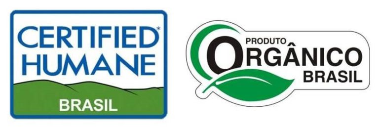

Publicado em 10 de maio de 2018 por Bruno e Matheus
O quê compõe a pecuária e a produção animal brasileira? Quando fazemos essa reflexão logo associamos com as criações mais comuns, como, avicultura, suinocultura e bovinocultura. Além disso, imaginamos essas criações sendo executadas dos modos tradicionais, como por exemplo, as aves criadas em gaiolas, os bois sendo criados em grandes áreas e os suínos alojados em baias estreitas. Sim, isso é realidade e possui grande importância. Todavia, criações de espécies alternativas e produções diferenciadas vem ganhando cada vez mais força na pecuária nacional.
Sustentabilidade, produção orgânica e bem-estar animal. Esses são alguns dos termos que você já ouviu por ai e só tende a se tornar mais comum. E é esse caminho alternativo que diversos criadores de animais vêm seguindo, visando fornecer produto de qualidade e aos consumidores e gerar valor à sociedade e ao meio ambiente.
Todos nós sabemos da existência desse mercado, mas grande parte das pessoas ainda acreditam que o acesso à esses produtos é restrito, porém, isso tem mudado ultimamente. Atualmente o acesso à esses alimentos de alto valor agregado tem aumentado cada vez mais. Isso faz com que haja o estímulo da produção desse tipo de alimento e os produtos estejam cada vez mais disponíveis na prateleiras dos supermercados. Sendo assim todos os agentes envolvidos se beneficiam, produtores, consumidores e o meio ambiente.
Para atingir tal objetivo de construir uma produção sustentável, gerando valor aos alimentos comercializados, esses produtores precisam obter um certificado de garantia de origem e qualidade. Atualmente há diversas categorias de certificação, como por exemplo, “boi orgânico”, “boi verde”, “bem-estar animal” e “produção sustentável”. Para conseguir tais certificações são necessários cumprir diversos requisitos definido pelo órgão fiscalizador, atestando assim a qualidade e origem dos produtos certificados.

Outra estratégia aderida por alguns produtores para produzir alimentos diferenciados é a criação de animais de espécies alternativas, que possuem maior qualidade em seus produtos e derivados. Como por exemplo, a criação de rãs, búfalos, avestruzes, e aves nobres. Esses animais geralmente possuem peculiaridades que agregam valor à sua carne, como por exemplo, o avestruz, que mesmo sendo uma carne vermelha, é magra e possui alto valor nutricional. Ou o leite de búfala, que possui diversas características benéficas à nossa saúde. Além disso, diversas outras criações não usuais tem crescido no Brasil e esse tipo de produção tem se tornado mais comum, sendo a aposta de diversos produtores.
Diversos fatores movem o mercado de produtos especiais, todavia, o principal impulsionador é o hábito dos consumidores. Cada vez mais as pessoas exigem produtos de maior qualidade e com certificação de origem, o que garante segurança alimentar, além de auxiliar na consciência ambiental e social. E através desses hábitos e com visão no futuro que os produtores estão buscando aprimorar cada vez mais suas produções, visando oferecer produtos cada vez mais de qualidade.
A carne, os ovos, o leite, e os derivados de origem animal que consumimos anos atrás não é o que compramos hoje, que provavelmente é bem distinta da que teremos no futuro. Os consumidores estão cada vez mais exigentes e nossa consciência ambiental também precisa crescer cada vez mais. E é buscando trabalhar de formas alternativas que diversos criadores de animais e produtores de alimentos estão buscando se desenvolver, tanto no âmbito econômico como no socioambiental.
Só obtêm resultados e produtos diferentes aqueles que mudam seus modos de produzir!
Referências
COLUSSI, Joana. Produzidos sem agrotóxicos, alimentos orgânicos buscam mais espaço na mesa do consumidor: Assistência técnica escassa e preço maior na hora da venda são os principais desafios do setor. 2015. Disponível em: <Clique Aqui>. Acesso em: 02 abr. 2017.
EQUIPE SCOT CONSULTORIA (São Paulo). O que falta para o mercado de carnes especiais avançar mais ainda no Brasil? 2016. Disponível em: <Clique Aqui>. Acesso em: 02 abr. 2017.
EQUIPE SNA/RJ (Rio de Janeiro). Valorização dos alimentos saudáveis impulsiona mercado de orgânicos. 2016. Disponível em: <Clique Aqui>. Acesso em: 02 abr. 2017.
GRAZIANO DA SILVA, J.; DEL GROSSI, M. E.; CAMPANHOLA, C. O que há de realmente novo no rural brasileiro. Cadernos de Ciência & Tecnologia, v. 19, n. 1, p. 37-67, 2002.
SEGATTI, S.M.; HESPANHOL, A.N. Alternativas para a geração de renda em pequenas propriedades rurais. In: ENCONTRO NACIONAL DE GRUPOS DE PESQUISA, 4., São Paulo. Anais… São Paulo: Universidade de São Paulo, 2008.